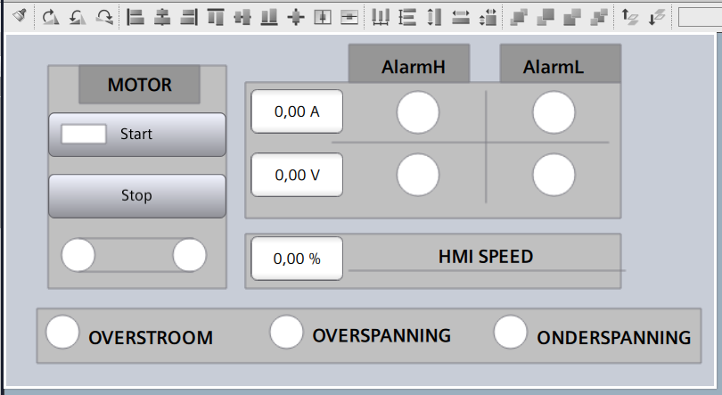
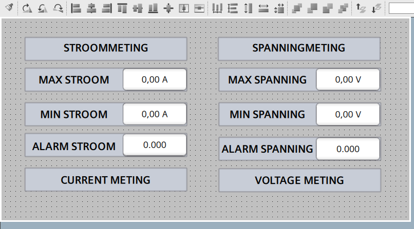
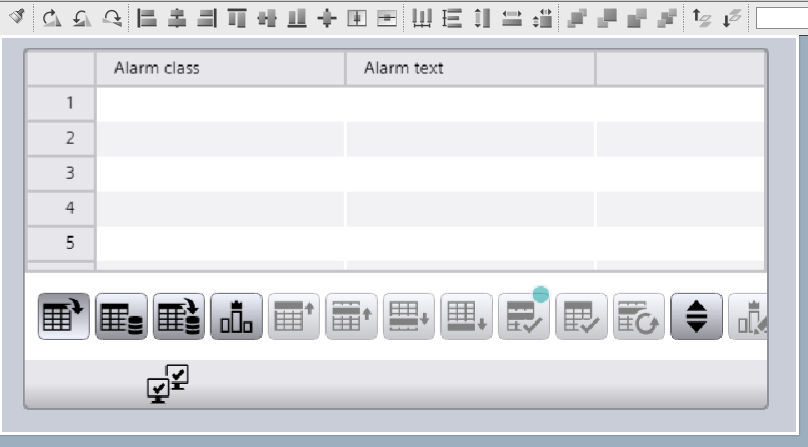
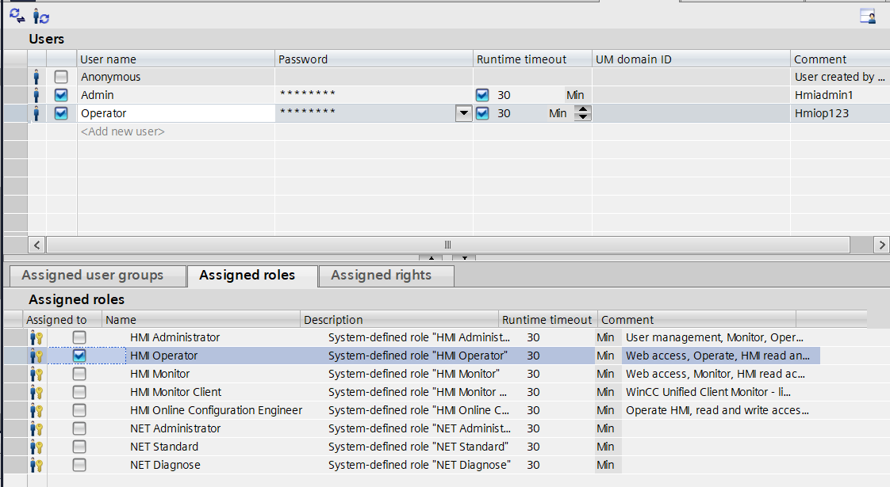

Network 3.2 · Project 2
Smart Factory Project — HMI & Alarm Management
Voortbouwend op de basisconfiguratie van Project 1 werd de WinCC Unified HMI verder uitgebreid met procesvisualisatie, navigatie, configureerbare parameters, meertalige ondersteuning en herbruikbare faceplates. Daarnaast werd een alarmbeheersysteem ontwikkeld met foutmeldingen, statusindicaties en bevestiging (ACK) via de HMI.
Projectinformatie
| Software | Siemens TIA Portal V19 (WinCC Unified) |
|---|---|
| Hardware | Siemens S7-1200 PLC, WinCC Unified Comfort Panel |
| Doelstellingen | HMI-schermen en navigatie opbouwen, herbruikbare faceplates ontwikkelen die gekoppeld zijn aan PLC-data, en een alarmbeheersysteem implementeren met foutdetectie en bevestiging. |
| Technische vaardigheden | HMI-schermontwerp, navigatiestructuur, meertalige interfaces, faceplates, alarmbeheer, koppeling PLC-HMI |
Projectdocumentatie
Deze screenshots tonen de belangrijkste onderdelen van de WinCC Unified HMI: procesbediening, parameterinstellingen, alarmbeheer en gebruikersrechten.




Video's
Resultaat
Een volledig functionele WinCC Unified HMI ontwikkeld voor Siemens TIA Portal, met intuïtieve procesbediening, parameterconfiguratie, alarmbeheer, gebruikersauthenticatie en rolgebaseerde toegangsrechten. De HMI communiceert correct met de PLC en ondersteunt een veilige en overzichtelijke bediening van de installatie.
Geleerde vaardigheden
Tijdens dit project lag de nadruk op het ontwerpen van een gebruiksvriendelijke en herbruikbare HMI. Door het toepassen van faceplates, meertaligheid en een geïntegreerd alarmbeheersysteem werd een onderhoudsvriendelijke en schaalbare gebruikersinterface ontwikkeld.